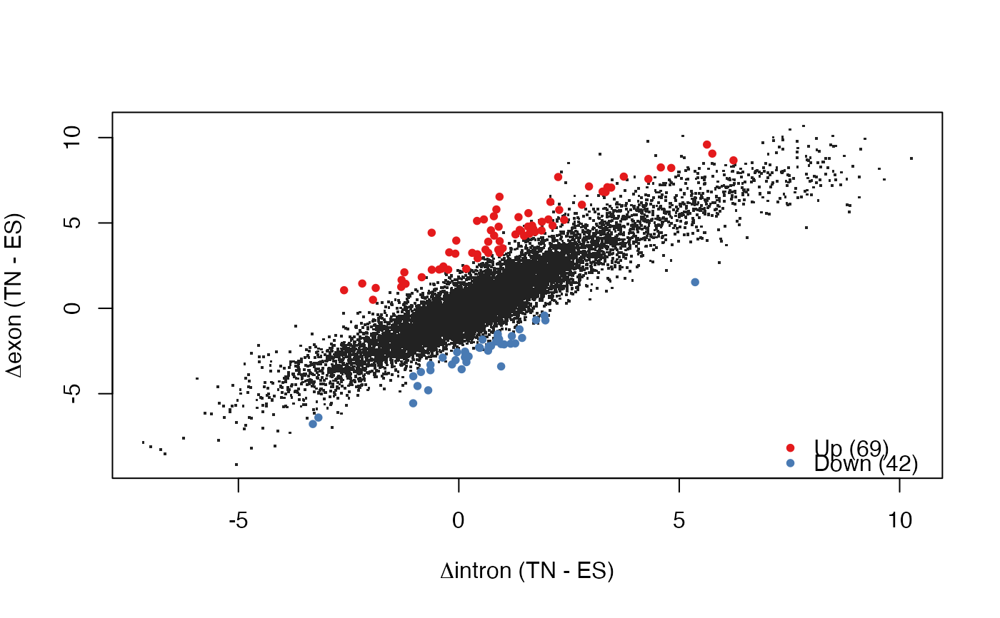

Starting from count tables with exonic and intronic counts
for two conditions, perform all the steps in EISA (normalize, identify
quantifyable genes, calculate contrasts and their significance).
runEISA(
cntEx,
cntIn,
cond,
method = NULL,
modelSamples = FALSE,
geneSelection = c("filterByExpr", "none", "Gaidatzis2015"),
statFramework = c("QLF", "LRT"),
effects = c("predFC", "Gaidatzis2015"),
pscnt = 2,
...
)
Arguments
| cntEx |
Gene by sample matrix with exonic counts, OR a
SummarizedExperiment with two assays named exon and
intron, containing exonic and intronic counts, respectively. If
cntEx is a SummarizedExperiment, cntIn will be
disregarded. |
| cntIn |
Gene by sample matrix with intronic counts. Must have the
same structure as cntEx (same number and order of rows and columns)
if cntEx is a matrix. Will be disregarded if cntEx is a
SummarizedExperiment. |
| cond |
numeric, character or factor with two levels
that groups the samples (columns of cntEx and cntIn) into two
conditions. The contrast will be defined as secondLevel - firstLevel.
|
| method |
One of NULL (the default) or "Gaidatzis2015". If
"Gaidatzis2015", gene filtering, statistical analysis and
calculation of contrasts is performed as described in Gaidatzis et al.
2015, and the statistical analysis is based on glmFit
and glmLRT. This is done by setting the arguments
modelSamples, geneSelection, effects and statFramework
to appropriate values (see details), overriding the defaults or any value
passed to these arguments. If NULL, the default values of the arguments
will be used instead (recommended). |
| modelSamples |
Whether to include a sample identifier in the design matrix
of the statistical model. If TRUE, potential sample effects
that affect both exonic and intronic counts of that sample will be taken
into account, which could result in higher sensitivity (default: FALSE). |
| geneSelection |
Controls how to select quantifyable genes. One of the
following:
"filterByExpr": (default) First, counts are normalized using
calcNormFactors, treating intonic and exonic counts
as individual samples. Then, filterByExpr is used
with default parameters to select quantifyable genes. "none": This will use all the genes provided in the count
tables, assuming that an appropriate selection of quantifyable genes has
already been done. "Gaidatzis2015": First, intronic and exonic counts are
linearly scaled to the mean library size (estimated as the sum of all
intronic or exonic counts, respectively). Then, quantifyable genes are
selected as the genes with counts x that fulfill
log2(x + 8) > 5 in both exons and introns. |
| statFramework |
Selects the framework within edgeR that is used
for the statistical analysis. One of:
"QLF": (default) Quasi-likelihood F-test using
glmQLFit and glmQLFTest. This
framework is highly recommended as it gives stricter error rate control
by accounting for the uncertainty in dispersion estimation. "LRT": Likelyhood ratio test using glmFit
and glmLRT |
| effects |
How the effects (contrasts or log2 fold-changes) are calculated.
One of:
"predFC": (default) Fold-changes are calculated using
the fitted model with predFC with
prior.count = pscnt. Please note that if a sample factor is
included in the model (modelSamples=TRUE), effects cannot be
obtained from that model. In that case, effects are obtained from a
simpler model without sample effects. "Gaidatzis2015": Fold-changes are calculated using the
formula log2((x + pscnt)/(y + pscnt)). If pscnt is not
set to 8, runEISA will warn that this deviates from the method
used in Gaidatzis et al., 2015. |
| pscnt |
numeric(1) with pseudocount to add to read counts
(default: 2). For method = "Gaidatzis2015", it is set to 8.
It is added to scaled read counts used in geneSelection = "Gaidatzis2015"
and effects = "Gaidatzis2015", or else used in cpm(..., prior.count = pscnt)
and predFC(..., prior.count = pscnt).
|
| ... |
additional arguments passed to the DGEList
constructor, such as lib.size or genes. |
Value
a list with elements
- fracIn
fraction intronic counts in each sample
- contrastName
contrast name
- contrasts
contrast matrix for quantifyable genes, with average log2
fold-changes in exons (Dex), in introns (Din), and average
difference between log2 fold-changes in exons and introns (Dex.Din)
- DGEList
DGEList object used in model fitting
- tab.ExIn
statisical results for differential changes between exonic
and intronic contrast, an indication for post-transcriptional regulation.
- params
a list with parameter values used to run EISA
Details
Setting method = "Gaidatzis2015" has precedence over other
argument values and corresponds to setting:
modelSamples = FALSE, geneSelection = "Gaidatzis2015",
statFramework = "LRT", effects = "Gaidatzis2015", pscnt = 8.
References
Analysis of intronic and exonic reads in RNA-seq data characterizes
transcriptional and post-transcriptional regulation.
Dimos Gaidatzis, Lukas Burger, Maria Florescu and Michael B. Stadler
Nature Biotechnology, 2015 Jul;33(7):722-9. doi: 10.1038/nbt.3269.
See also
Examples
#> filtering quantifyable genes...
#> keeping 11034 from 20288 (54.4%)
#> fitting statistical model...
#> done
#> calculating contrasts...
#> done
#> identified 131 genes to highlight
